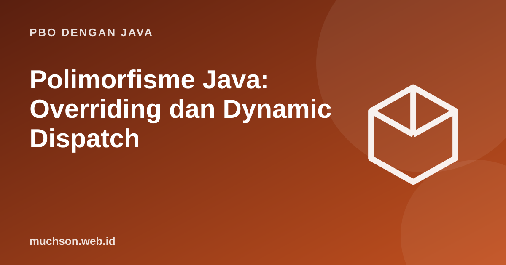

Beranda › Artikel › PBO dengan Java
PBO dengan JavaPolimorfisme Java: Overriding dan Dynamic Dispatch
Polimorfisme berarti "banyak bentuk": satu pemanggilan, perilaku berbeda tergantung jenis objek sebenarnya. Inilah yang membuat kita dapat menambah jenis baru tanpa mengubah kode yang sudah ada.
Sebaiknya sudah paham: inheritance

Tujuan belajar
Setelah membaca dan mencoba materi ini, Anda mampu:
- membedakan tipe referensi (deklarasi) dan tipe objek (sebenarnya)
- menjelaskan dynamic dispatch pada pemanggilan method
- melakukan upcasting dan downcasting dengan aman
- memakai instanceof dengan pola
- menunjukkan bagaimana polimorfisme menghilangkan if/else berdasarkan jenis
Satu referensi, banyak jenis objek
abstract class Hewan {
abstract String suara();
void bersuara() { System.out.println(getClass().getSimpleName() + ": " + suara()); }
}
class Kucing extends Hewan { String suara() { return "meong"; } }
class Anjing extends Hewan { String suara() { return "guk"; } }
class Bebek extends Hewan { String suara() { return "kwek"; } }
public class Main {
public static void main(String[] args) {
Hewan[] kandang = { new Kucing(), new Anjing(), new Bebek() };
for (Hewan h : kandang) {
h.bersuara(); // method yang dijalankan ditentukan oleh jenis objek sebenarnya
}
}
}Kucing: meong
Anjing: guk
Bebek: kwek
Dynamic dispatch
Java memilih versi method pada saat program berjalan berdasarkan kelas objek yang sesungguhnya, bukan tipe variabelnya. Sebaliknya, atribut dan method static ditentukan oleh tipe variabel pada saat kompilasi.
class Induk {
String nama = "atribut Induk";
String siapa() { return "method Induk"; }
static String stat() { return "static Induk"; }
}
class Anak extends Induk {
String nama = "atribut Anak";
@Override String siapa() { return "method Anak"; }
static String stat() { return "static Anak"; }
}
public class Main {
public static void main(String[] args) {
Induk x = new Anak(); // tipe deklarasi Induk, objek sebenarnya Anak
System.out.println(x.siapa()); // method: mengikuti objek (Anak)
System.out.println(x.nama); // atribut: mengikuti tipe variabel (Induk)
System.out.println(Induk.stat()); // static: mengikuti tipe, bukan objek
}
}method Anak
atribut Induk
static Induk
Upcasting dan downcasting
class Hewan { void makan() { System.out.println("makan"); } }
class Burung extends Hewan { void terbang() { System.out.println("terbang"); } }
public class Main {
public static void main(String[] args) {
Hewan h = new Burung(); // upcasting: otomatis, selalu aman
h.makan();
// h.terbang(); // error kompilasi: tipe Hewan tidak punya terbang()
Burung b = (Burung) h; // downcasting: eksplisit, diperiksa saat berjalan
b.terbang();
Hewan lain = new Hewan();
try {
Burung salah = (Burung) lain;
} catch (ClassCastException e) {
System.out.println("ClassCastException: Hewan bukan Burung");
}
if (h instanceof Burung bb) { // instanceof dengan pola: periksa dan cast sekaligus
bb.terbang();
}
}
}makan
terbang
ClassCastException: Hewan bukan Burung
terbang
Manfaat: tanpa rantai if/else
import java.util.List;
interface Bentuk { double luas(); }
record Lingkaran(double r) implements Bentuk { public double luas() { return Math.PI * r * r; } }
record Persegi(double s) implements Bentuk { public double luas() { return s * s; } }
record Segitiga(double a, double t) implements Bentuk { public double luas() { return 0.5 * a * t; } }
public class Main {
static double totalLuas(List<Bentuk> daftar) {
double total = 0;
for (Bentuk b : daftar) total += b.luas(); // tidak ada if (b instanceof Lingkaran) ...
return total;
}
public static void main(String[] args) {
List<Bentuk> daftar = List.of(new Lingkaran(1), new Persegi(2), new Segitiga(3, 4));
System.out.printf("%.3f%n", totalLuas(daftar));
}
}13.142
Tanda desain
Bila kode Anda penuh if (x instanceof A) ... else if (x instanceof B) ..., itu tanda bahwa perilaku seharusnya menjadi method yang ditimpa pada masing-masing class.
Latihan mandiriCoba kerjakan dulu sebelum membuka jawaban.
1. Tambahkan class Sapi ke contoh Hewan. Apa yang perlu diubah di Main?
Tidak ada selain menambahkannya ke larik; perulangan tetap sama.
2. Prediksi keluaran: Induk x = new Anak(); x.stat() (static) pada contoh dynamic dispatch.
Memanggil static lewat instance mengikuti tipe variabel: "static Induk".
3. Mengapa upcasting tidak memerlukan casting eksplisit?
Setiap objek Anak pasti juga sebuah Induk, jadi konversi selalu aman.
4. Kapan instanceof dengan pola tetap wajar dipakai?
Saat berurusan dengan data dari luar desain kita (misalnya hasil parsing) atau pada sealed hierarchy dengan switch pola.
Ringkasan
- Polimorfisme: satu pemanggilan, perilaku mengikuti objek sebenarnya.
- Method instance dipilih saat runtime; atribut dan static mengikuti tipe variabel.
- Upcasting otomatis; downcasting eksplisit dan dapat gagal (gunakan instanceof).
- Polimorfisme menghilangkan rantai if/else dan memudahkan perluasan.
Tanya jawab
Apa bedanya polimorfisme kompilasi dan runtime?
Overloading adalah polimorfisme saat kompilasi (statis); overriding adalah polimorfisme saat berjalan (dinamis).
Apakah polimorfisme memperlambat program?
Dispatch dinamis berbiaya kecil dan JIT sering menghilangkannya lewat inlining; jarang menjadi masalah.
Apakah interface juga polimorfik?
Ya. Variabel bertipe interface dapat menunjuk objek class mana pun yang mengimplementasikannya.
Referensi
- Oracle: Polymorphism (Java Tutorials)
- dev.java: Pattern Matching for instanceof
- Joshua Bloch, Effective Java (edisi ke-3, Addison-Wesley, 2018)
- The Java Language Specification